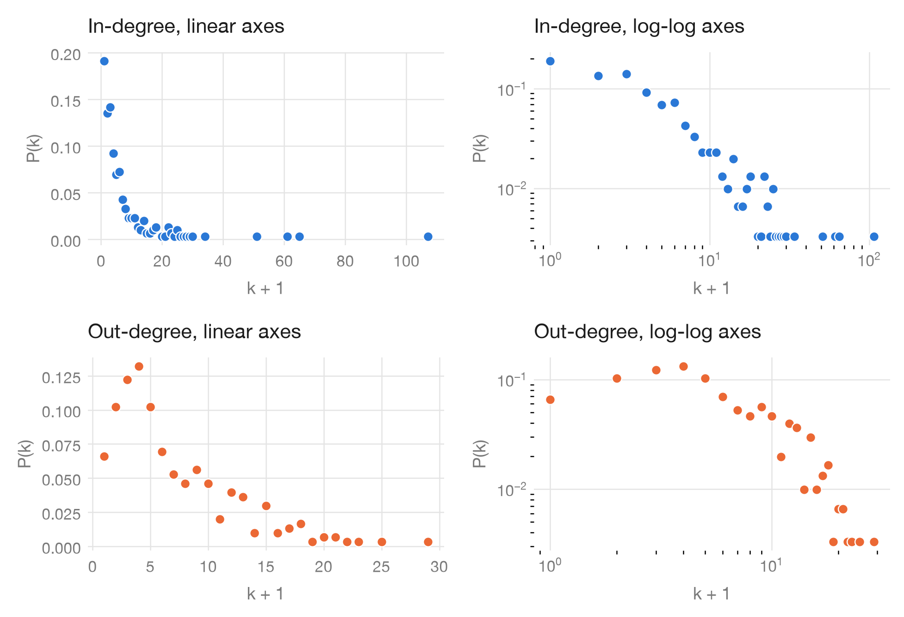
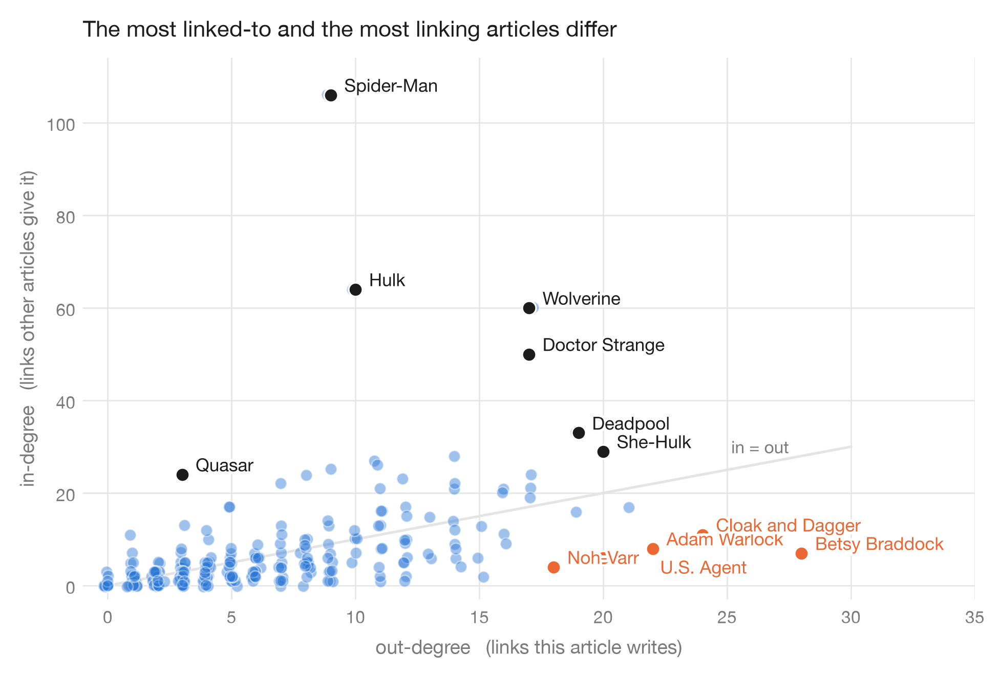

Loading the frozen snapshot…
Week 1 · Networks · Degrees and distributions
Every hero.
Eventually.
Five cards in a pack. 303 to collect. Surely the famous ones are the hardest to find?
Open a few packs. The network has a different idea.
The pack machine
Free · five draws · duplicates possibleChance per draw = (incoming links + 1) / 2,087. This rule makes well-linked articles easier to draw; it is not a measure of fame. Change the seed to start a new random sequence; your collection stays.
Your first five cards are waiting.
The long tail has a long memory.
Most articles receive very few links. One gets 106. The rare cards are the ones tucked away in the tail of our collection, not the celebrities.
Both series use percentages, but they answer different questions: how common is a degree among articles, versus how often did your weighted draws find it? Log view uses degree + 1 so the 58 zero-incoming articles remain visible. Empty bins are omitted.
Read the distribution as a table
Sketch your own distribution
Drag across the sketch to set a rough shape, or enter counts for seven degree bins. Your sketch is an unscored thought experiment.
Your card index
Card art is typographic. Every name, degree and source link comes from the roster.
The post · Week 1 · Networks
Who gets linked, and who does the linking?
What we asked
Which articles get linked to, which ones do the linking, and who is left out entirely? And does being famous make a card easy or hard to draw?
What we did
We loaded all 303 roster entries before adding a single edge, so the 17 isolates survive. Then we plotted in-degree and out-degree on linear and log–log axes, and built a five-card pack rule where each draw picks an article with weight (incoming links + 1) / 2,087.
What surprised us
The hubs are the easy cards. Spider-Man alone is linked by 106 articles, while 58 articles share the lowest drop rate, including all 17 isolates. Finishing the set takes about 1,945 packs on average. And the articles that link out most (Betsy Braddock, 28 outgoing links) are not the ones that get linked to most.

In-degree against out-degree

The takeaway
The last few cards cost more than the first hundred.
The expected wait is about 9,721 individual draws. Each minimum-rate card has a 1 / 2,087 chance per draw. Isolates matter, but they are not the whole bottleneck: 41 other articles share their drop rate.
Requiring the 17 isolates adds about 694 draws to the expected wait compared with collecting only non-isolates under the same probabilities. That is about 7.1% of the full expected wait.
Bonus: can Baymax get home? ›Evidence and details.
What the data means
303 article entries and 1,784 directed links from the course’s frozen 26 August 2026 snapshot. A link means one article links to another within this roster. It does not measure friendship, hero strength, popularity or the whole Marvel universe.
Download the snapshot and metrics (JSON)Limits of the experiment
The drop rule is designed for learning. It does not model purchases or a real trading-card product. A long-tailed plot alone does not establish a power law. Collection progress is saved in this browser and may be lost when storage is cleared.
Methods and reproducibility
The directed roster gives in-degree and out-degree. Five independent draws per pack allow duplicates. The unequal coupon-collector expectation is calculated by integrating the probability that at least one card is still missing, checked against 20,000 independent exponential-race simulations. Expected whole packs lie between 1,944.19 and 1,944.99; approximately 1,945 is a rounded presentation, not an exact value. See analysis/week01_packs.py and the downloadable week01_packs.json.
Analysis and source code on GitHub. All experiments run locally in your browser; the frozen data is never edited.
AI use and authorship
Built with AI assistance for interface design, programming, explanation drafts and test construction. Metrics come from the provided snapshot and reproducible analysis; the games and metaphors are authored presentation choices. Numerical checks compare independent Python and browser implementations. The free-play tools are not course hand-ins.